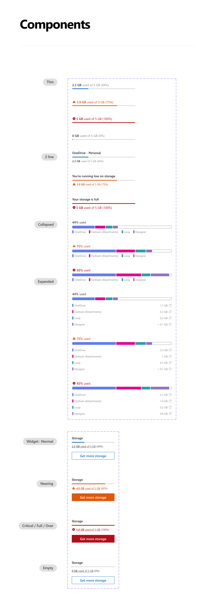
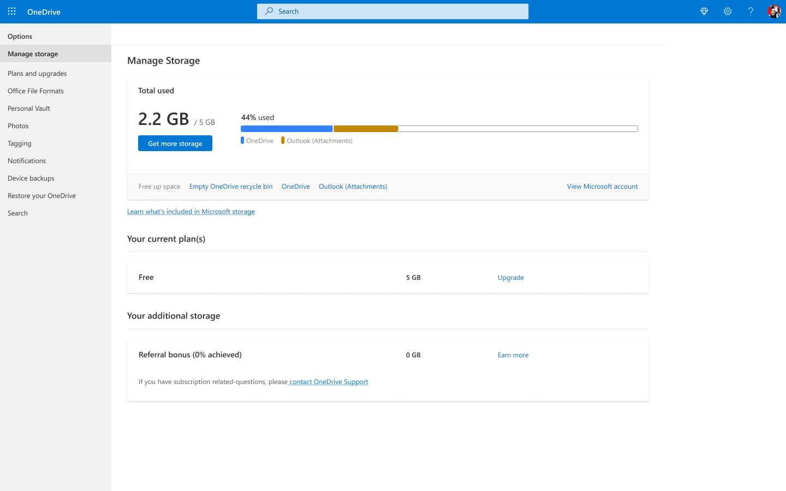

Universal Quota Bar Framework
Creating scalable storage and quota bar guidelines for Microsoft — a unified component system across OneDrive, Outlook, Windows, and account.microsoft.com, tied to a 15M subscriptions goal.


One quota, different messages
"Today we are sending various messages across various endpoints notifying consumers of need to manage/upgrade to a subscription, but lack a cohesive visual system/approach." Each Microsoft app had its own quota visualization: different colors, thresholds, and actions. Users checking storage in OneDrive, Outlook, and Windows saw three completely different experiences of the same data.
USQ (Unified Storage Quota) was identified as a key strategy to meet Microsoft's ambitious 15M subscriptions goal — but it required a shared design foundation first.
A shared language for storage
Led the OneDrive quota bar design as part of a multi-team effort. Built a component system with five quota states (Normal, Nearing, Critical, Full, Over), multiple layout variants (Thin, Expanded, Collapsed, 2-line, Multi-line), and full accessibility specs — adopted by OneDrive, Outlook Web, Outlook Mobile, Windows Settings, and account.microsoft.com.
Pooled storage
This separate Android exploration shows how shared storage could be understood without exposing anyone else's files. It is related storage work, not a demonstration of the cross-platform Universal Quota Bar framework above.
The demo loads only from this device on localhost.
The system in use



What shaped the system
- System over one-offs. Every partner team wanted to customize. We held the line on a shared component — a consistent bar users recognized across every Microsoft app was worth more than any individual surface optimization.
- Full Fluent data viz color token system. Used Fluent's 40-slot color token system (light/dark/high contrast) rather than hardcoded values — ensuring the component stayed accessible across all themes without per-surface overrides.
- Accessibility as a first-class spec. WCAG 4.5:1 contrast, screen reader roles/values, and keyboard navigation were fully specified in Figma — not left to engineering interpretation.
- Glanceability over precision. Users need "am I fine / should I pay attention / do I need to act" — not exact GB. The five-state system answered those questions instantly.
- Quota bar as the monetization gateway. The component anchors Manage Storage and upgrade entry points consistently — making it the top-of-funnel for both cleanup and revenue across every Microsoft app.
Aligning across teams
Led OneDrive quota bar design alongside design partners across Android, Outlook Web, Outlook Mobile, Windows, and account.microsoft.com. Coordinated six designers and their engineering teams to align on component specs, string variants, and interaction behavior.
What changed
- PGAs grew significantly YoY across endpoints after quota bar standardization
- M365 conversion rate nearly doubled in tested flows using updated quota + upgrade patterns
- Component adopted across OneDrive, Outlook Web, Outlook Mobile, Windows Settings, and account.microsoft.com
- Designs adopted as reference patterns by other Microsoft teams
- Full Fluent accessibility compliance — WCAG 4.5:1 across light, dark, and high contrast modes